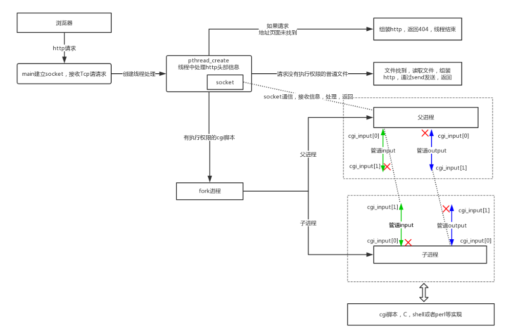
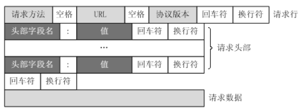
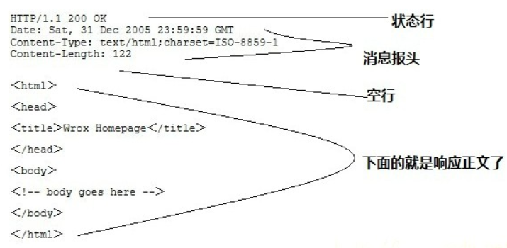
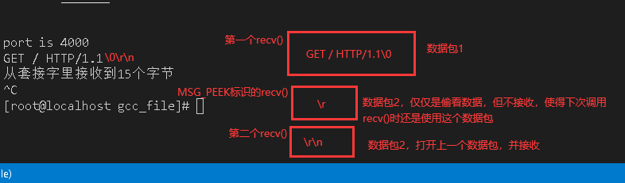
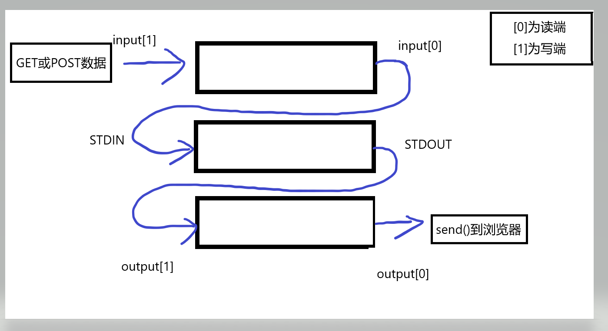
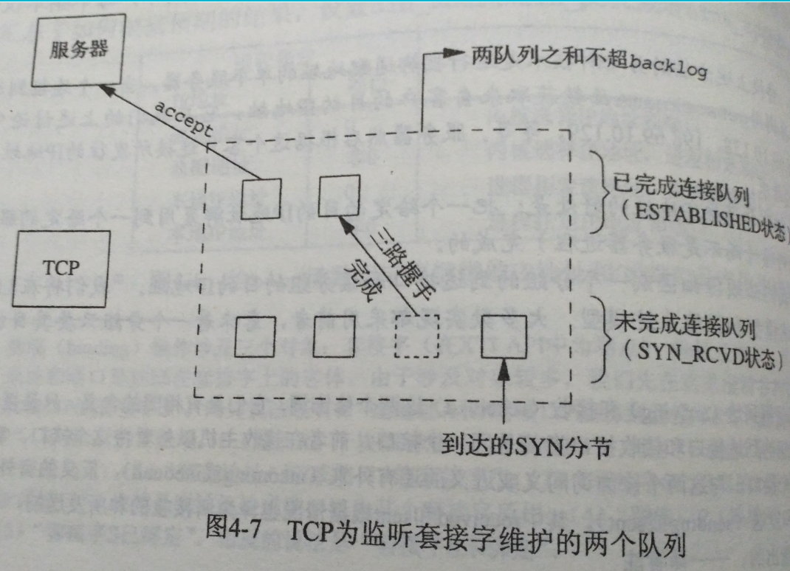

这是一个用C写的轻量级http server，在centos8用win vs code使用ssh远程连接进行测试运行与修改
- 下载项目
Download
http
http协议是基于tcp/ip协议的，要获取服务端的html数据只需要创建socket连接即可
http通信流程

需要注意的事项
http是无连接的，每次连接只处理一个请求。服务端处理完客户端的请求并且接收到客户端的答应就会断开连接
http是媒体独立的，只要客户端和服务端知道如何处理数据内容，任何类型都可以通过http发送。客户端与服务器指定使用合适的mime-type（内容类型）
http是无状态的，对事务处理没有记忆能力，需要处理前面的数据时需要重新传输
请求格式
- 客户端请求格式
由请求行，请求头，空行，请求数据组成
1
2
3
4
5// 客户端请求例子
GET /hello.txt HTTP/1.1
User-Agent: curl/7.16.3 libcurl/7.16.3 OpenSSL/0.9.7l zlib/1.2.3
Host: www.example.com
Accept-Language: en, mi
- 服务端响应格式
由状态行，消息头，空行，响应正文组成
1
2
3
4
5
6
7
8
9
10// 服务端响应例子
HTTP/1.1 200 OK
Date: Mon, 27 Jul 2009 12:28:53 GMT
Server: Apache
Last-Modified: Wed, 22 Jul 2009 19:15:56 GMT
ETag: "34aa387-d-1568eb00"
Accept-Ranges: bytes
Content-Length: 51
Vary: Accept-Encoding
Content-Type: text/plain
http请求方法
| 方法 | 描述 |
|---|---|
| GET | 请求指定的页面信息，并返回实体主体 |
| POST | 向指定资源提交数据进行处理请求（例如提交表单或者上传文 |
http响应头信息
| 答应头 | 描述 |
|---|---|
| Content-Length | 表示内容长度 |
| Content-Type | 表示后面的文档属于什么MIME类型 |
http状态码
| 分类 | 描述 |
|---|---|
| 1开头 | 信息，服务器收到请求，需要请求者继续执行操作 |
| 2开头 | 成功，操作被成功接收并处理 |
| 3开头 | 重定向，需要进一步的操作以完成请求 |
| 4开头 | 客户端错误，请求包含语法错误或无法完成请求 |
| 5开头 | 服务器错误，服务器在处理请求的过程中发生了错误 |
http内容类型
用于定义网络文件的类型和网页的编码，决定浏览器将以什么形式、什么编码读取这个文件
| 类型 | 描述 |
|---|---|
| text/html | html格式 |
| text/plain | 纯文本格式 |
| text/html | xml格式 |
| image/gif | gif图片格式 |
| image/jpeg | jpg图片格式 |
| image/png | png图片格式 |
1 | // 例子 |
cgi
CGI(Common Gateway Interface) 是 HTTP 服务器与你的或其它机器上的程序进行“交谈”的一种工具，其程序须运行在网络服务器上。
绝大多数的 CGI 程序被用来解释处理来自表单的输入信息，并在服务器产生相应的处理，或将相应的信息反馈给浏览器。CGI 程序使网页具有交互功能。
源码分析
注意：源码做了一些修改


startup()创建http套接字连接
1 | int startup(__u_short *port){ |
listen()监听队列

error_die()输出错误信息，并退出程序
1 | void error_dir(const char *err_str){ |
get_line()从客户端读取一行数据，以\r或\r\n作为行结束符
1 | int get_line(int client, char *buf, int size){ |
accept_requst()请求处理
1 | void accept_requst(void *sock){ |
serve_file()处理服务端文件
1 | void serve_file(int client, const char *path){ |
cat()读取文件数据并发送到客户端
1 | void cat(int client, FILE *resource){ |
execute_cgi()处理CGI文件
1 | void execute_cgi(int client, const char *path, const char *method, const char *query_string){ |
unimplemented()不被支持的请求
1 | void unimplemented(int client){ |
not_found()需要访问的文件不存在
1 | void not_found(int client){ |
headres()返回服务端响应头
1 | void headres(int client){ |
cannot_execute()执行cgi程序时出错
1 | void cannot_execute(int client){ |
bad_request()请求出错
1 | void bad_request(int client){ |